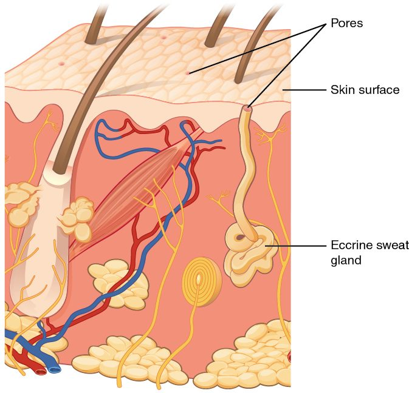

Hair, nails, sweat glands and sebaceous glands are the accessory structures of the skin. Each one grows out of the epidermis and dips into the dermis, and each is built from the keratinocytes and connective tissue you met in the layers of the skin. This page covers the parts of a hair and its follicle, the hair growth cycle, the arrector pili muscle, sebaceous glands and sebum, eccrine and apocrine sweat glands, and the parts of a nail.
Hair: dead keratin from a living follicle
A haircut does not hurt, but pulling a single hair does. The part you cut is dead; the part you pull on is anchored in living tissue with nerves around it.
A hair is a flexible strand of dead, keratin-filled cells. It grows from a hair follicle (follic- = little bag): a tube-shaped pocket of epidermis that dips down through the dermis, often reaching the hypodermis. Hairs grow almost everywhere on your skin. The main exceptions are the thick skin of the palms and soles, the lips, and the nipples.
Hair is made of hard keratin. Its keratin molecules are tied to each other by many disulfide bonds, the sulfur-to-sulfur links you met in protein shape. That makes a hair tougher than the stratum corneum and stops it from flaking apart. A chemical perm works by breaking those bonds, reshaping the hair around a curler, and letting the bonds form again in new places.
![A block of skin cut through one hair. The hair rises from a teardrop-shaped pocket that dips down through the dermis to the fat below. At its base, a swollen bulb wraps around a small knot of blood vessels, and a layer of dividing cells sits just above that knot. Colored sheaths line the pocket around the hair. A lobed gland opens into the pocket partway up, and a slanting strip of muscle runs from the pocket's side up toward the surface. A boxed inset marks the part of the hair above the skin, which has an inner core, a middle layer and an outer coat.](../figures/os-5-11.jpg)
The parts of a hair
Figure 1 shows a hair in its follicle. Along its length, a hair has two parts:
- The hair shaft is the part that projects above the skin surface.
- The hair root is the part inside the follicle, below the surface.
At the bottom, the follicle swells into the hair bulb. The bulb wraps around the hair papilla (papill- = nipple), a knob of dermal connective tissue with capillaries and nerve fibers in it. The capillaries of the papilla supply the bulb. Just above the papilla sits the hair matrix (matrix = womb, source): a layer of rapidly dividing cells. As matrix cells divide, the new cells are pushed upward, fill with hard keratin and die. Hair grows only from the matrix. Everything above it is dead.
Melanocytes in the matrix pass melanin to the new cells of the hair, the same way skin melanocytes pass it to keratinocytes. Their mix of eumelanin and pheomelanin sets your hair color. Hair turns gray and then white as the melanocytes of the follicle run out with age.
In cross section, a hair has three layers, from the center out:
- The medulla (medull- = marrow, inner part) is a core of loosely packed cells and air spaces. Fine hairs often have none.
- The cortex (cortex = bark) is the thick middle layer of tightly packed, keratin-filled cells. It holds most of the pigment and gives the hair its strength.
- The cuticle (cut- = skin, -icle = small) is a single layer of flat, overlapping cells on the outside, arranged like roof shingles with their free edges pointing toward the tip. It keeps neighboring hairs from matting together. When the cuticle wears away at the tip, the cortex frays into split ends.
The follicle's wall is made of an inner and an outer epithelial root sheath, which are continuous with the epidermis, wrapped in a sheath of dermal connective tissue. Sensory nerve endings wrap around the base of each follicle. They are why you feel an insect walking across the hairs of your arm without touching the skin.
Types of hair
- Vellus hair (vell- = fleece) is short, fine and pale. It covers most of a child's body and much of an adult's.
- Terminal hair is long, coarse and usually pigmented: the hair of the scalp, eyebrows and eyelashes, and, after puberty, of the armpits, the pubic area and, in many men, the face and chest. Rising hormone levels at puberty switch many vellus follicles to making terminal hair.
The hair growth cycle
A scalp hair can grow to a meter or more; an eyelash stops at about a centimeter. Eyelashes grow more slowly, but only two to three times more slowly. The bigger difference is how long each follicle keeps growing before it rests. Every follicle runs through a repeating cycle of three phases:
- Anagen (ana- = up, gen- = to produce) is the growth phase. Matrix cells divide rapidly, and the hair lengthens by about 0.3 to 0.4 mm a day, roughly 1 cm a month. On the scalp, anagen lasts about 2 to 7 years, and about 85 to 90% of scalp follicles are in it at any time. On the eyebrows and eyelashes it lasts only a few months, so those hairs stay short.
- Catagen (cata- = down) is a short transition of about 2 to 3 weeks. The matrix stops dividing, the lower follicle shrinks upward by apoptosis, and the base of the hair becomes a hard, rounded "club" still anchored in the follicle.
- Telogen (tel- = end) is the resting phase, about 3 months on the scalp. The club hair sits in the resting follicle. When a new anagen phase begins, a new hair grows up beneath the old one and pushes it out. That is why you shed about 50 to 100 scalp hairs a day without thinning.
Because follicles cycle out of step with each other, your scalp loses a few hairs every day rather than all at once. Two things can put many follicles in step:
- A major shock to the body, such as childbirth, a high fever, surgery or a crash diet, can push many anagen follicles into catagen and telogen together. About 2 to 3 months later, when those follicles restart anagen, the club hairs are pushed out in large numbers. The hair regrows, because the follicles are intact. After childbirth the trigger is the sudden fall in pregnancy hormones, which had kept extra follicles growing.
- Drugs that kill dividing cells, such as many cancer chemotherapy drugs, stop the matrix cells of anagen follicles. The hairs break or fall out within a few weeks of starting treatment, and regrow after it ends.
| Anagen | Catagen | Telogen | |
|---|---|---|---|
| What happens | Matrix cells divide; the hair lengthens | Matrix stops; follicle shrinks; a club hair forms | Follicle rests; the club hair is held, then pushed out |
| Length on the scalp | About 2 to 7 years | About 2 to 3 weeks | About 3 months |
| Share of scalp follicles | About 85 to 90% | About 1% | About 10 to 15% |
| Hit by drugs that kill dividing cells? | Yes | Little | No |
The arrector pili muscle
Step into a cold wind, or hear a sudden noise in the dark, and the hairs on your arms stand up in goose bumps. The cause is a tiny muscle attached to each follicle.
The arrector pili (arrect- = raised, pil- = hair) is a small bundle of smooth muscle cells. It runs from the side of the follicle, below the sebaceous gland, up to the papillary layer of the dermis. Follicles slant in the skin, so when the muscle contracts it pulls the hair upright and dimples the skin around it into a goose bump. Like all smooth muscle, it is involuntary: nerve signals triggered by cold or fear make it contract.
In furry mammals, raised hair traps a thicker layer of still air and makes the animal look larger. In humans, with little body hair, the effect is tiny. The muscle's pull may also squeeze a little sebum out of the gland it wraps past.
Sebaceous glands and sebum
Sebaceous glands (seb- = grease, tallow) are oil glands in the dermis. Most are simple branched alveolar glands that empty into a hair follicle, so each hair has one or more beside it. A few open straight onto the skin surface: on the lips, the eyelids, the nipples and the genitals. There are none on the palms and soles, which have no hair.
They are the skin's holocrine glands. Stem cells at the edge of each alveolus divide by mitosis. The new cells move toward the center, fill with lipid, and burst. The burst cells and their contents are the secretion, sebum: an oily mix of triglycerides, waxes, cholesterol and a lipid called squalene, with cell debris.
Sebum flows up the follicle onto the hair and skin surface. Its oily film:
- keeps hair supple and stops it from drying and breaking
- slows water loss from the skin surface
- contains fatty acids that slow the growth of some bacteria and fungi
Sebum output tracks hormone levels. It is high briefly at birth, low through childhood, rises sharply at puberty, and falls in older age, which is one reason older adults' skin is drier.
Sweat glands
Sweat glands, also called sudoriferous glands (sudor = sweat, -fer = carrying), are coiled tubular glands. Their secreting coil lies deep in the dermis or upper hypodermis, and a duct carries the product toward the surface. There are two kinds, which differ in almost everything except their shape.

Eccrine sweat glands
You have about 2 to 4 million eccrine sweat glands (ec- = out, crin- = to separate), over almost all of your skin. They are densest on the palms, the soles and the forehead. Each has its own duct, which opens at a pore on the skin surface (Figure 2).
Eccrine sweat is made in two steps:
- Cells of the secreting coil release a watery fluid that starts out much like plasma with its proteins removed.
- As the fluid flows up the duct, the duct cells take back much of its sodium and chloride. The sweat that reaches the surface is about 99% water, with some salt, potassium, lactate and small germ-killing peptides. It is slightly acidic.
The faster sweat flows, the less time the duct has to take back salt, so sweat produced fast during hard work is saltier than a light sweat. Heavy sweating therefore loses both water and salt.
Eccrine glands release their product by exocytosis, the merocrine mode. Their main job is heat loss, which the next topic covers. The glands of the palms and soles also respond to emotion, which is why your palms sweat before an exam.
Apocrine sweat glands
Apocrine sweat glands (apo- = away from) are larger glands with wider channels, found mainly in the armpits, the groin and around the nipples. Their ducts empty into hair follicles, above the sebaceous glands, not onto the skin surface. They start working at puberty.
Their product is thicker and cloudy: sweat with added proteins and lipids. It has almost no smell when it is released. Bacteria on the skin break down its proteins and lipids, and their products cause body odor. Apocrine glands respond to emotional stress, pain and sexual arousal rather than to heat.
| Eccrine sweat gland | Apocrine sweat gland | |
|---|---|---|
| Where | Almost all skin; densest on palms, soles, forehead | Armpits, groin, around the nipples |
| Duct opens | At a pore on the skin surface | Into a hair follicle |
| Size | Small, narrow channel | Larger, wider channel |
| Secretion | Watery: water, salt, some potassium and lactate | Thicker: sweat plus proteins and lipids |
| How cells release it | Exocytosis (merocrine) | Mainly exocytosis (merocrine), despite the name |
| Starts working | From birth | At puberty |
| Main trigger | Heat; emotion on palms and soles | Emotional stress, pain, sexual arousal |
| Smell | None | Body odor after bacteria break it down |
Nails
Press on a fingernail and the pink beneath it turns white; let go and the pink returns within about two seconds. Paramedics use that to judge blood flow to the fingertips. The pink is not in the nail at all: it is blood in the dermis, seen through a clear plate of dead cells.

A nail is a plate of hard keratin: tightly packed, dead keratinized cells, made by a modified patch of epidermis (Figure 3). Its parts:
- The nail body is the visible plate. Its free edge extends past the fingertip.
- The nail root is the part of the plate hidden under the skin at its base.
- The nail matrix is the thickened layer of dividing epithelial cells under the nail root. It makes the nail. New cells fill with hard keratin and die, and the plate is pushed forward.
- The lunula (lun- = moon, -ula = little) is the white crescent at the base of the nail body: the part of the matrix you can see. Its thick layer of cells hides the capillaries beneath, so it looks white rather than pink.
- The nail bed is the epidermis beneath the nail body, which the plate slides over as it grows. The dermis under it is packed with capillaries, which give the nail its pink color.
- The nail folds are the folds of skin around the plate: the proximal nail fold over its base and the lateral nail folds along its sides.
- The eponychium (epi- = upon, onych- = nail), also called the nail cuticle, is a thin band of stratum corneum that grows from the proximal nail fold onto the base of the nail body. It seals the gap between fold and nail.
- The hyponychium (hypo- = below) is a thickened layer of stratum corneum under the free edge. It seals the gap between the fingertip and the nail's underside.
Fingernails grow about 3 mm a month, and a lost fingernail takes about 6 months to regrow. Toenails grow about a third as fast and take 12 to 18 months. Because the matrix makes the nail, damage to the matrix can leave a nail permanently ridged or split. Damage to the nail bed alone usually heals, and the nail grows back normally. Cutting or pushing back the eponychium opens a route for microbes into the fold.
The nail bed also shows skin color changes clearly, because the plate has no melanin: pale nail beds suggest pallor, and bluish ones cyanosis.
Putting it together
Every accessory structure starts as epidermis. A hair is keratinocytes from a follicle's matrix, fused into hard keratin; a nail is keratinocytes from the nail matrix, flattened into a plate. Sebaceous glands, the skin's holocrine glands, oil the hair from the side of each follicle. Eccrine sweat glands open onto the surface and make watery sweat; apocrine sweat glands open into follicles and make a thicker secretion that bacteria turn into odor. The arrector pili, a smooth muscle, links each follicle to the dermis above it.